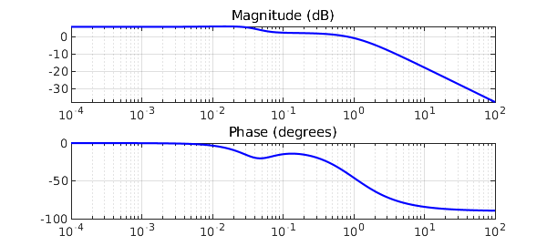
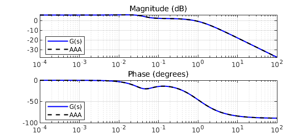
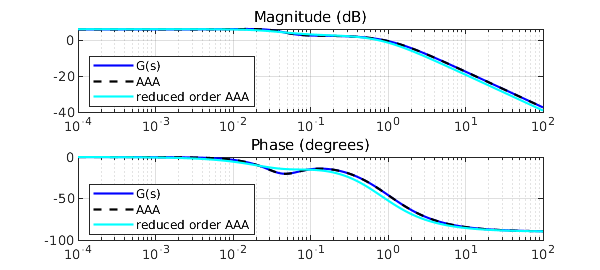
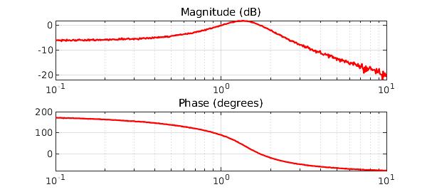
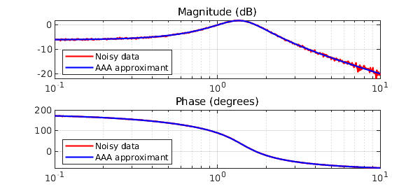
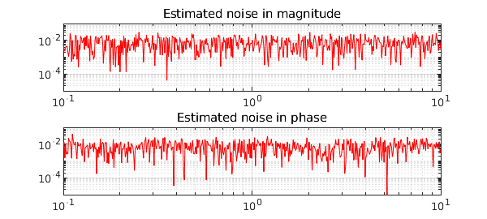

The AAA algorithm provides a natural way to identify LTI (linear time-invariant) system parameters such as poles, zeros and DC gain from Bode plots. For example, consider the 4th order system $$ G(s) = 2\frac{(1+105s)(1+\frac{1.4}{0.05}s+\frac{1}{0.05^2}s^2)}{(1+100s)(1+\frac{1.4}{0.04}s+\frac{1}{0.04^2}s^2)(1+s)} $$
Nc = [8.4e4 6.68e3 2.66e2 2]; % numerator coefficients Dc = [6.25e4 6.6625e4 4.26e3 1.36e2 1]; % denominator coefficients N = @(s) Nc*s.^[3:-1:0]'; D = @(s) Dc*s.^[4:-1:0]'; G = @(s) N(s(:))./D(s(:)); % system transfer function
for which we have the following:
pol = roots(Dc), zer = roots(Nc), DCgain = abs(G(0))
pol =
-1.000000000000001 + 0.000000000000000i
-0.028000000000000 + 0.028565713714171i
-0.028000000000000 - 0.028565713714171i
-0.010000000000000 + 0.000000000000000i
zer =
-0.035000000000000 + 0.035707142142714i
-0.035000000000000 - 0.035707142142714i
-0.009523809523810 + 0.000000000000000i
DCgain =
2
Let's sample some values in the frequency range $10^{-4}\leq \omega \leq 10^2$, and draw the Bode plots of magnitude and phase:
w = logspace(-4,2,3000);
mag = abs(G(i*w)); ph = -angle(G(i*w));
LW = 'linewidth'; LO = 'location'; SW = 'southwest';
subplot(211), semilogx(w,20*log10(mag),'b-'), grid on
title('Magnitude (dB)')
subplot(212), semilogx(w,ph*180/pi,'b-'), grid on
title('Phase (degrees)')

Given magnitude and phase, an approximation $H(s)$ for $G(s)$ is readily obtained by AAA approximation of the complex signal. Samples are mirrored in order to enforce symmetry.
wA = [-fliplr(w) w]; magA = [fliplr(mag) mag]; phA = [-fliplr(ph) ph];
GA = magA.*exp(i*phA); % complex signal
[H,polA,resA,zerA] = aaa(GA,i*wA);
polA, zerA, DCgainA = abs(H(0)) % relevant parameters
subplot(211), hold on, semilogx(w,20*log10(abs(H(i*w))),'k--')
legend('G(s)','AAA',LO,SW)
subplot(212), hold on, semilogx(w,angle(H(i*w))*180/pi,'k--')
legend('G(s)','AAA',LO,SW)
polA = -0.999999999999993 + 0.000000000000045i -0.027999999999904 + 0.028565713714183i -0.009999999998222 - 0.000000000000566i -0.028000000001871 - 0.028565713713665i zerA = -0.035000000000000 + 0.035707142142714i -0.035000000000000 - 0.035707142142714i -0.009523809523810 - 0.000000000000000i DCgainA = 1.999999999999999

Also, $H(s)$ shows negligible errors in initial data:
err_mag = norm(mag-abs(H(i*w)),inf) err_ph = norm(ph-angle(H(i*w)),inf)
err_mag =
4.884981308350689e-15
err_ph =
2.569992829659640e-15
The following means of recomputing poles will play a key role in what follows. In the case when they aren't computed in complex conjugate pairs, which is a necessary condition for $H(s)$ to represent a physical model, we discard the imaginary parts of the corresponding polynomials and extract the new roots (poles). Here, poles and zeros do match:
[NcA,DcA] = residue(resA,polA,[]); polA = roots(real(DcA)), zerA = roots(real(NcA))
polA = -0.999999999999993 + 0.000000000000000i -0.028000000000887 + 0.028565713713924i -0.028000000000887 - 0.028565713713924i -0.009999999998222 + 0.000000000000000i zerA = -0.035000000000529 + 0.035707142142959i -0.035000000000529 - 0.035707142142959i -0.009523809523871 + 0.000000000000000i
Now let's complicate things a little bit. A reduced order approximation, useful in applications to simplify analysis and control design, is obtained by calling the AAA algorithm with a low degree. 20 Lawson iterations under the hood place our scarce resource (poles) at best, though not necessarily in complex conjugate pairs, hence we force a recomputation, and eventually solve a least-squares problem. This idea is a variant of the AAA-LS method introduced in [1].
Going back to our approximation problem, with a 2nd order reduction we expect two real distinct poles for the reduced $H_r(s)$. Note that in this case a straightforward zero-pole (over)simplification, leaving with $1/(1+s)$, wouldn't really be acceptable, and AAA-LS finds a decent compromise:
[~,polAr] = aaa(GA,i*wA,'degree',2);
polAr = roots(real(poly(polAr))); % pole recomputation
d = min(abs(i*wA(:)-polAr.'),[],1);
Q = d./(i*wA(:)-polAr.');
c = Q\GA.'; % solve LS problem, new residues c
Hr = @(s) [d./(s(:)-polAr.')]*c;
[NAr] = residue(c,polAr,[]);
zerAr = roots(real(NAr)), polAr, DCgainAr = abs(Hr(0))
subplot(211), semilogx(w,20*log10(abs(Hr(i*w))),'c-'), hold off
legend('G(s)','AAA','reduced order AAA',LO,SW)
subplot(212), semilogx(w,angle(Hr(i*w))*180/pi,'c-'), hold off
legend('G(s)','AAA','reduced order AAA',LO,SW)
zerAr = -0.294963170363907 polAr = -0.798508392918573 -0.035811189966051 DCgainAr = 2.036869044252427

To see how good AAA-LS actually is, consider the scalar example with noise found in [2], i.e. $$ f(s) = (s-1)/(s^2+s+2). $$ The function is sampled at 500 logarithmically spaced points in the interval [0.1,10], and then normally distributed noise with a standard deviation of $10^{-2}$ is added:
Nc = [1 -1]; Dc = [1 1 2];
N = @(s) Nc*s.^[1 0]';
D = @(s) Dc*s.^[2 1 0]';
f = @(s) N(s(:))./D(s(:));
w = logspace(-1,1,500); mag = abs(f(i*w)); ph = -angle(f(i*w));
mag = mag+0.01*randn(1,length(mag)); ph = ph+0.01*randn(1,length(ph));
subplot(211), semilogx(w,20*log10(mag),'r-'), grid on
title('Magnitude (dB)')
subplot(212), semilogx(w,ph*180/pi,'r-'), grid on
title('Phase (degrees)')

We compute a rational approximant of degree only 2 using the above method. The AAA-LS approximant shows no significant deviations from the measurements, at least in the eyeball norm. This time the number of Lawson iterations is increased, to enhance their filtering effect:
wn = [-fliplr(w) w]; magn = [fliplr(mag) mag]; phn = [-fliplr(ph) ph];
fn = magn.*exp(i*phn);
[~,poln] = aaa(fn,i*wn,'degree',2,'lawson',30);
poln(find(real(poln)>0)) = -1; % force system stability
poln = roots(real(poly(poln)));
dn = min(abs(i*wn(:)-poln.'),[],1);
Qn = dn./(i*wn(:)-poln.');
cn = Qn\fn.';
Hn = @(s) [dn./(s(:)-poln.')]*cn;
subplot(211), hold on, semilogx(w,20*log10(abs(Hn(i*w))),'b-'), hold off
legend('Noisy data','AAA approximant',LO,SW)
subplot(212), hold on, semilogx(w,angle(Hn(i*w))*180/pi,'b-'), hold off
legend('Noisy data','AAA approximant',LO,SW)

The poles are decently approximated, even in these perturbed conditions, as shown by the coefficients of the denominator:
Dcn = poly(poln)
Dcn = 1.000000000000000 0.991776586122330 1.983831384319689
The AAA-LS approximant effectively estimates the additive noise rather accurately, both in magnitude and in phase:
subplot(211), loglog(w,abs(mag(:)-abs(Hn(i*w))),'r-',LW,.5), grid on
title('Estimated noise in magnitude'), axis([min(w) max(w) 1e-5 1e-1]);
subplot(212), loglog(w,abs(ph(:)-angle(Hn(i*w))),'r-',LW,.5), grid on
title('Estimated noise in phase'), axis([min(w) max(w) 1e-5 1e-1]);

[1] S. Costa and L. N. Trefethen, AAA-least squares rational approximation and solution of Laplace problems, Proceedings of the 8ECM, 2021.
[2] I. V. Gosea and S. Güttel, Algorithms for the rational approximation of matrix-valued functions, arXiv:2003.06410v2, 2021.